How to use every part of Claude Switch. Screenshots use made-up demo data.
Get started
Claude Switch runs several Claude Desktop accounts side by side, each in its own window, e.g. Work and Personal. It shows every account's usage and reset times, and hands a session to another account when one runs out.
- Install Claude Desktop if you haven't, then install Claude Switch from the download page.
- Open Claude Switch. Name the account Claude is already signed in to (e.g. Personal), then your other accounts (e.g. Work).
- Each new profile opens its own Claude window. Sign in there with that profile's account. You do this once per profile.
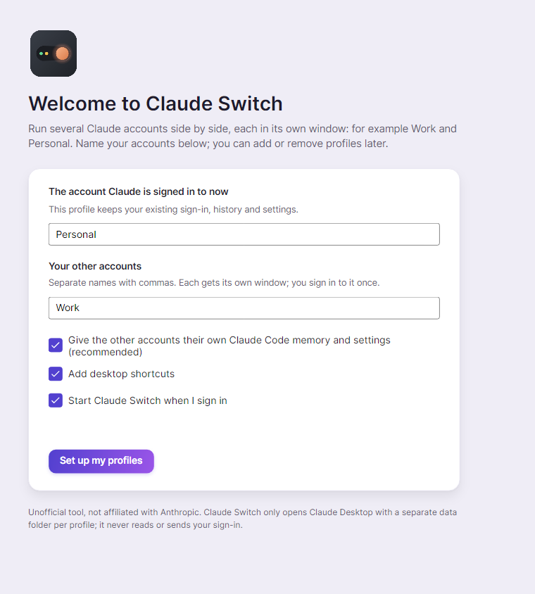
Tip. Every profile needs its own account. Two profiles on one account would share one usage limit, so Claude Switch asks you to sign in with a different one.
Overview
The home page. Four tiles along the top sum things up: how many profiles you have (and how many are open), which account has the most room left, how many Claude Code sessions there are, and which Claude version you run.
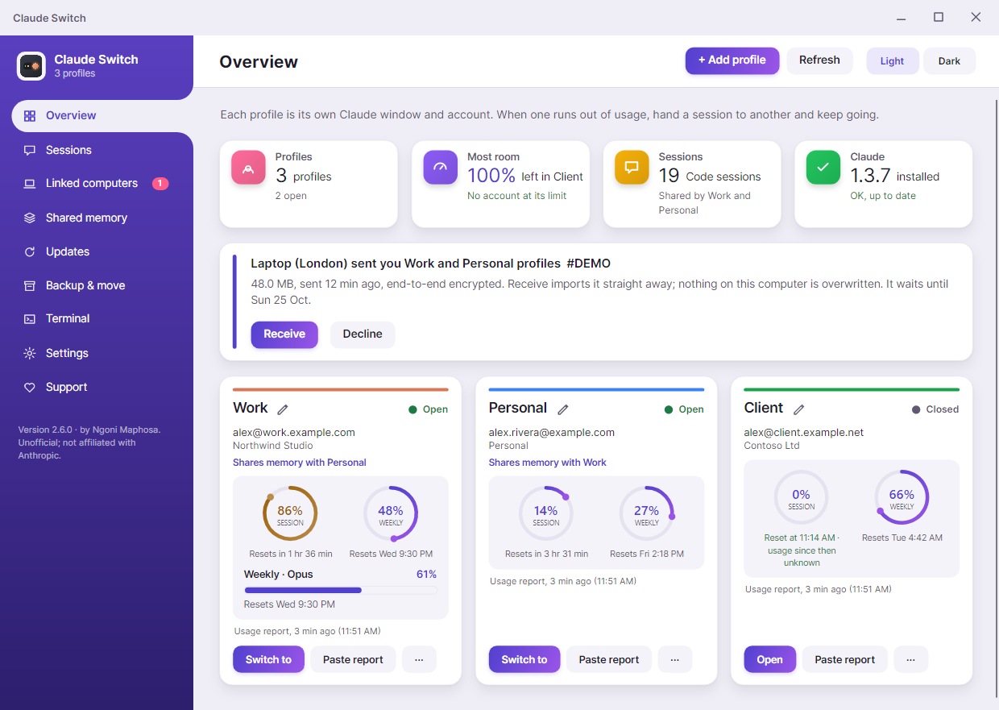
Below are banners for anything that needs you (a transfer waiting, an account at its limit, a profile with no account) and one card per profile:
- Name and pencil. Click the pencil (or double-click the name) to rename the profile. Its launchers and terminal command follow; nothing needs signing in again.
- Open / Closed / Not signed in, the account email and organisation.
- Usage rings. Session and Weekly, worded like Claude's own panel. 0% means all available, 100% means used up. Reset times are under each ring.
- Switch to / Open brings that profile's Claude window forward or opens it. A profile with no account shows Sign in instead.
- Paste report. For exact numbers, copy the usage report in that profile's Claude window (it starts with Claude Code usage report) and press this. Claude Switch also notices it on its own.
- ··· (More): restart the window, open Claude Code in a terminal as this profile, copy MCP servers from another profile, duplicate, rename, pick a colour, open at start-up, show its folder, or remove it.
Add a profile and sign in
- On Overview, press + Add profile and name it, e.g. Client A.
- A Claude window opens for it straight away, with a Sign in to Client A window beside it.
- Sign in in the new Claude window. The sign-in window updates by itself and turns green when it's done. Press Done.
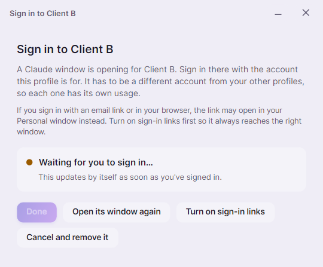
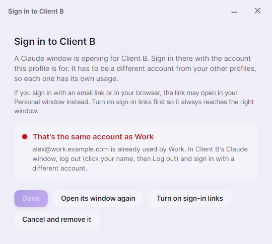
If you sign in with an account another profile already uses, it says which one and keeps Done greyed out. In that Claude window, click your name, choose Log out, and sign in with a different account.
Closing the window before signing in offers to remove the new profile (a profile with no account can't be used) or keep it for later. Profiles without an account, and two profiles sharing one, get a banner on Overview with a button to fix it.
Tip. Signing in with an email link or in your browser? The link can open in your main Claude window instead. Press Turn on sign-in links first (Windows) so it always reaches the window that asked for it.
Sessions
Claude Code conversations from each signed-in account, newest first. When an account runs out of usage, pick the session and press Continue in Personal → (or any other profile). The conversation is copied there and the original stays where it is.
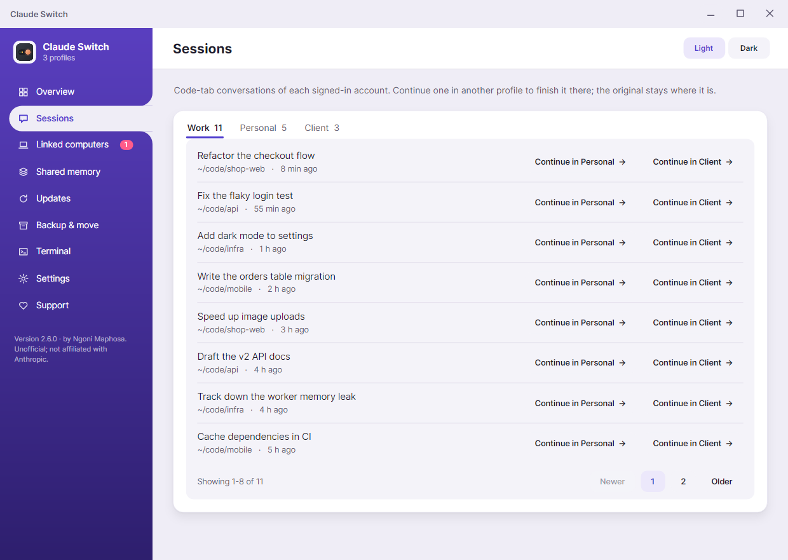
Linked computers
Send profiles to your other computers over the internet, wherever they are: another office, another country. Transfers are end-to-end encrypted to the receiving computer and sign-ins never travel.
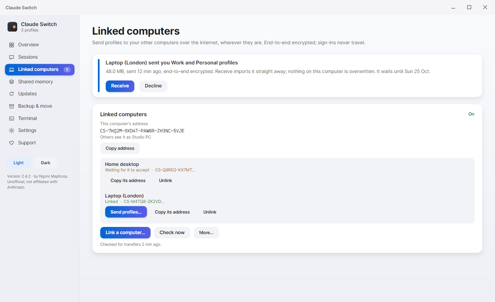
- Press Turn on. This computer gets an address like
CS-7KQ2M-9XD4T-PAW8R-ZH3NC-5VJE. Press Copy address. - On the other computer, press Link a computer… and paste the address. The first computer gets a request; press Accept. You only link once.
- Press Send profiles… next to a linked computer and tick the profiles to send.
- On the other computer, a banner appears: press Receive. It imports straight away; nothing there is overwritten.
Every transfer has a short ID like #A1B2C3, shown on both computers, and the Transfers card shows it live:
- Speed and time left while it uploads (e.g. 12.4 of 48 MB at 1.1 MB/s, about 30 s left). The receiving computer sees the upload progress too.
- Resume. If the connection drops, the transfer is Paused. Press Resume and it carries on from the parts already sent. It also resumes when Claude Switch starts.
- No duplicates. Sending the same profiles again resumes or replaces the copy that's waiting, so the other computer only ever gets one.
- Closing the send window doesn't stop it: press Hide (keeps sending). Cancel stops it and deletes it from the relay.
- A transfer waits on the relay for up to a week, so the other computer needn't be on, and is deleted once collected or declined.
Tip. Update both computers to the same version of Claude Switch before sending.
Shared memory
Let accounts share one memory and one set of conversations. When one runs out of usage, open another and carry on from exactly where you left off: same projects, same notes, same chats. Sign-ins stay separate.
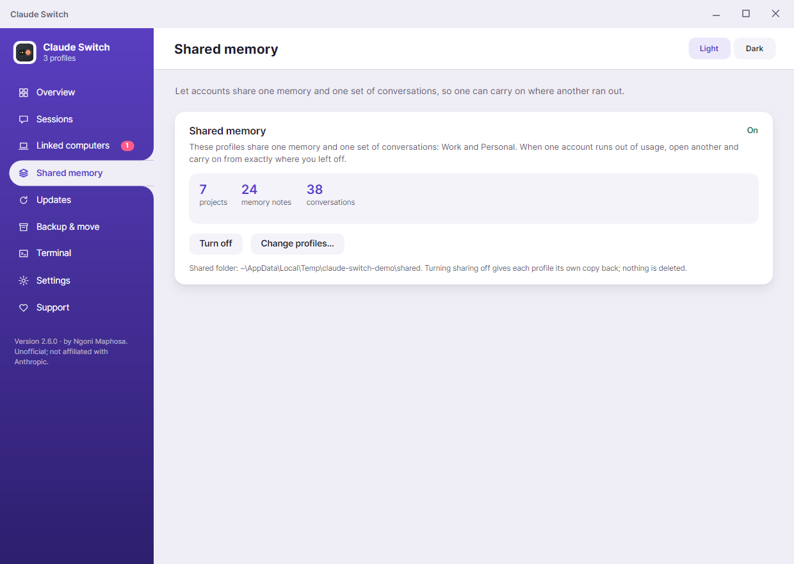
Press Turn on sharing, pick the profiles, and close their Claude windows while it sets up. Turn off gives each profile its own copy back; nothing is deleted.
Updates
Shows every installed copy of Claude and its version, and spots the classic trap: a second, forgotten copy that stopped updating. Restart all profiles moves windows onto the current copy; Check for a newer Claude opens the updater. Choose Tell me, Automatic (opens profiles that are behind so Claude's own updater runs) or Off.
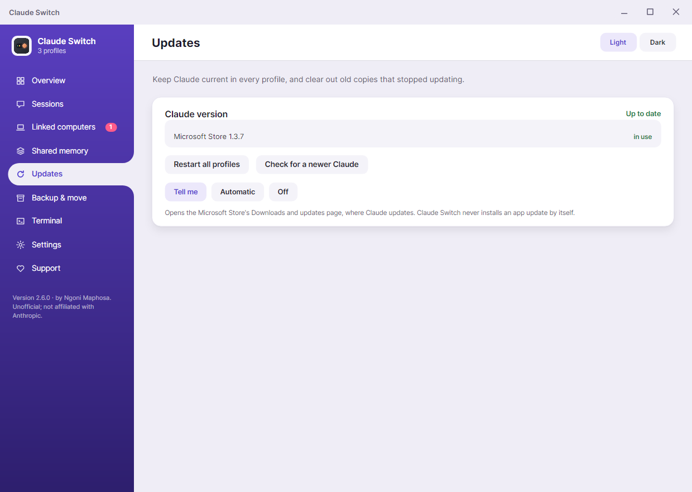
Backup & move
Export… saves profiles (sessions, memory, settings) to one password-protected file; Import… brings them back on any computer, e.g. after a crash. Sign-ins are never exported. Or send them straight to a linked computer.
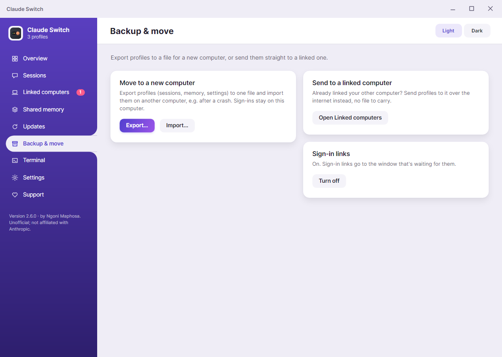
Terminal
Run Claude Code as any profile. Turn on terminal commands to type claude-work, claude-personal, … in any terminal, and Add a folder rule so plain claude picks the right profile inside a project. Or use ··· > Open Claude Code in a terminal on a profile card.
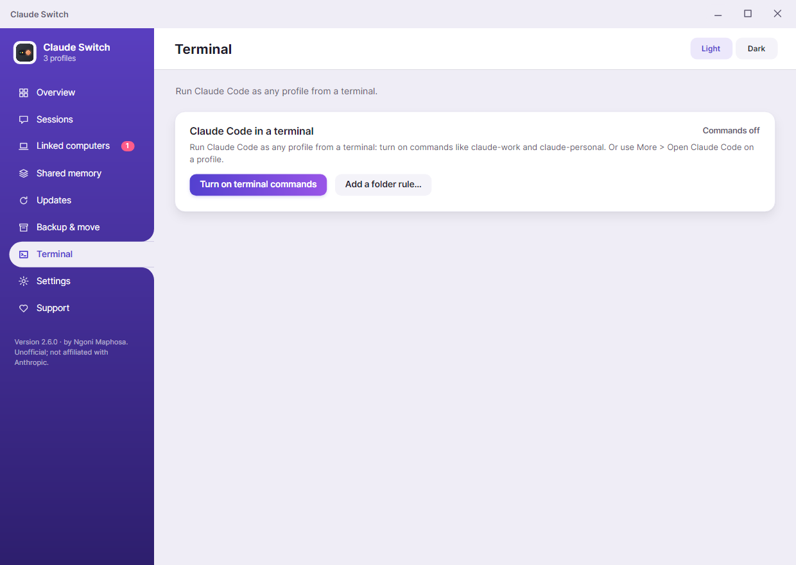
Settings
- Keyboard shortcuts (Windows): Ctrl+Alt+1 to 9 open a profile; Ctrl+Alt+0 opens Claude Switch.
- Reopen profiles when a Claude update closes them.
- Start Claude Switch when I sign in, and offer to reopen the profiles you had open.
- Claude Switch updates: Tell me, Automatic or Off. Updates are signed and only installed if the signature and checksum match.
- Diagnose… writes one report: where each profile's data lives, which Claude each window runs, sign-in state and launchers, with a fix for anything wrong. Emails are masked so you can paste it into an issue.
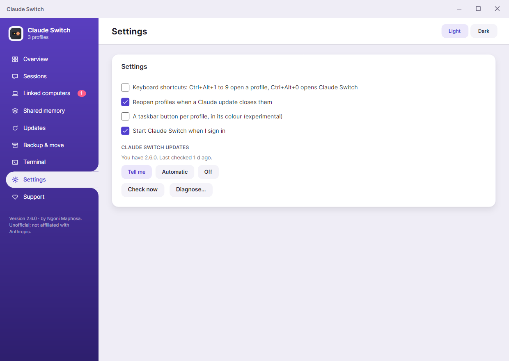
Small screens, light and dark
On a laptop, or when the window isn't maximised, everything gets tighter. Narrower still, the sidebar shrinks to icons; hover one to see its name. Switch between Light and Dark at the top right of any page.
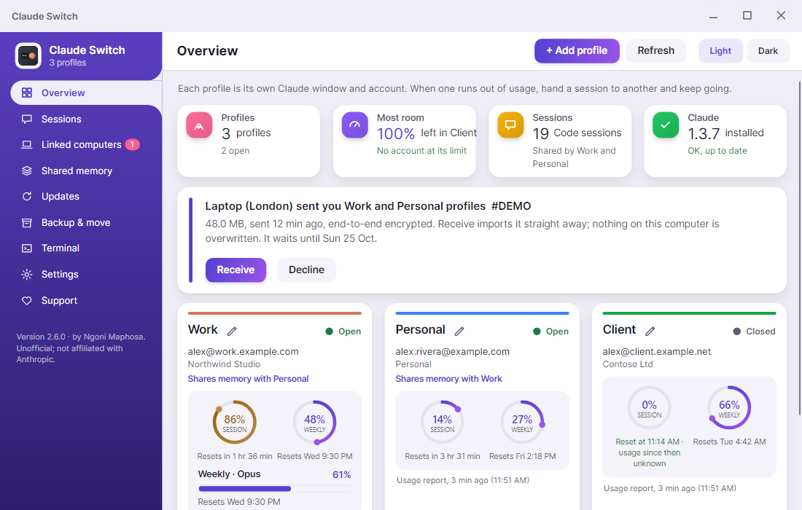
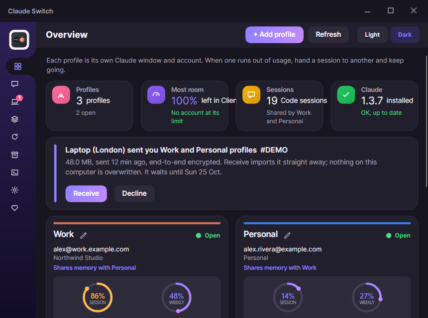
When something looks wrong
- "X and Y have swapped accounts". A sign-in link opened in the wrong window. Press Swap names; nobody signs in again.
- "X has no account yet". Press Sign in to X, or Remove it if you don't need it.
- "X and Y use the same account". Press Sign Y in again and use a different account.
- A transfer says Paused. Check your connection and press Resume on the Linked computers page.
- Usage looks old. Copy the usage report in that Claude window and press Paste report.
- Anything else. Settings > Diagnose…, then report an issue with the report.
For scripts: ClaudeSwitch --list, --open Work, --diagnose, --check-update, --version.